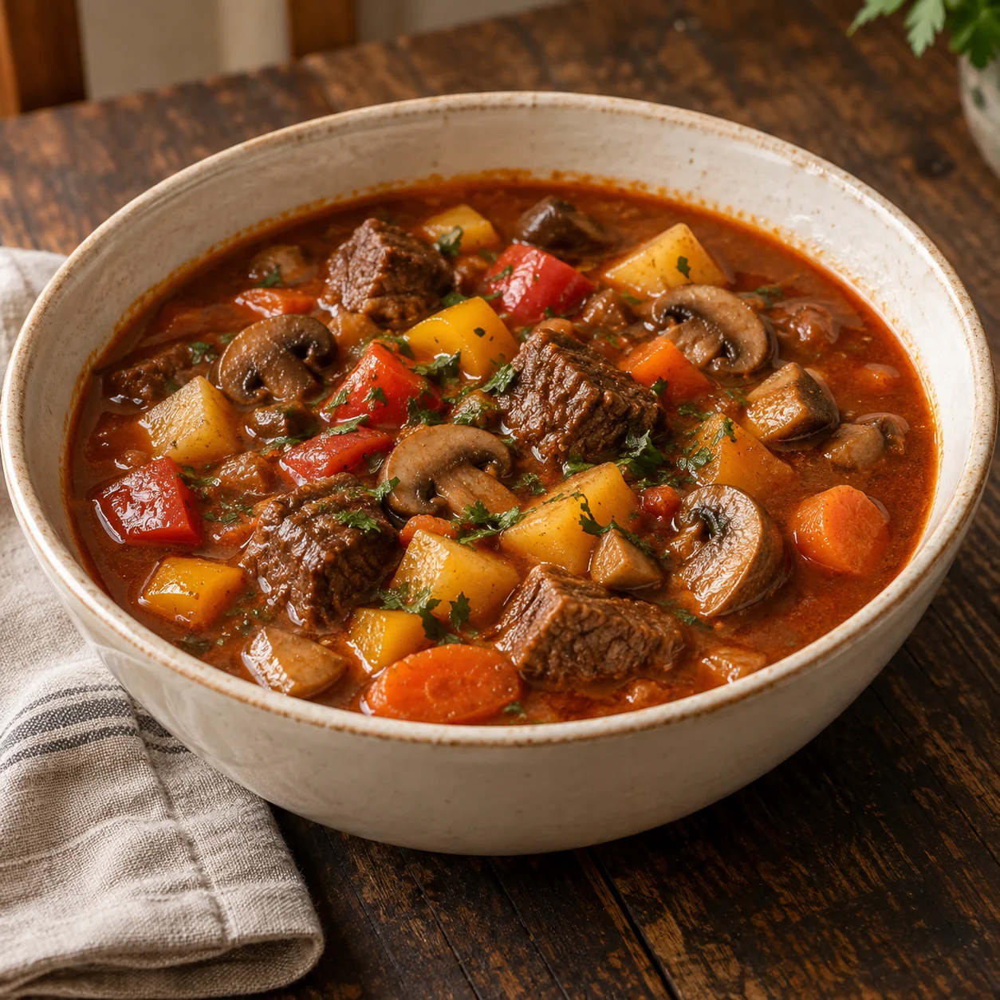

Unsere Klassiker · Suppen
Deftige Gulaschsuppe

Eine kräftige, wärmende Gulaschsuppe mit zart geschmortem Rindfleisch, Kartoffeln, buntem Gemüse und Champignons.
Diese Suppe habe ich 2018 für unseren Gemeindeausflug gekocht – seitdem gehört sie für mich unbedingt in unser Rezeptbuch.
Zutaten
500 gRinderschulter oder Rindernacken
2 ELButterschmalz
1 großeZwiebel, fein gewürfelt
2 ZehenKnoblauch, fein gehackt
1 ELTomatenmark
150 mlRotwein, nach Geschmack
800 mlRinderbouillon
2 ELZucker
3 ELPaprikapulver, edelsüß
3 TLPaprikapulver, rosenscharf
2Lorbeerblätter
4 ZweigeMajoran, Blätter grob gehackt
3 großeKartoffeln, gewürfelt
1 großeKarotte, in Scheiben
2Paprikaschoten, klein gewürfelt
250 gChampignons, in Scheiben; kleine Champignons geviertelt
½ BundPetersilie, fein gehackt
Nach GeschmackSalz und Pfeffer
Zubereitung
- Rinderschulter oder Rindernacken in etwa 3 × 3 cm große Würfel schneiden. Zwiebel und Knoblauch fein würfeln. Kartoffeln und Paprika würfeln, die Karotte in Scheiben schneiden. Große Champignons in Scheiben schneiden, kleine Champignons vierteln.
- Das Butterschmalz in einem großen Topf erhitzen. Die Rindfleischwürfel hineingeben und unter regelmäßigem Rühren etwa 5 Minuten kräftig anbraten. Zwiebel und Knoblauch dazugeben und alles weitere 5 Minuten mitdünsten.
- Das Fleisch mit Rinderbouillon und Rotwein ablöschen. Salz, Pfeffer, Zucker, beide Sorten Paprikapulver, Lorbeerblätter, Tomatenmark und Majoran dazugeben und gründlich unterrühren.
- Den Deckel auflegen und die Suppe bei kleiner Hitze etwa 60 Minuten sanft schmoren lassen, damit das Fleisch schön zart wird.
- Kartoffeln, Paprika, Champignons und Karotten hinzugeben. Alles weitere etwa 20 Minuten köcheln lassen, bis das Gemüse gar ist. Zum Schluss die Petersilie unterrühren und die Gulaschsuppe heiß servieren.
Tipp
Am nächsten Tag schmeckt die Gulaschsuppe oft noch kräftiger, weil sie über Nacht schön durchziehen konnte. Dazu passt frisches Baguette oder ein kräftiges Bauernbrot.